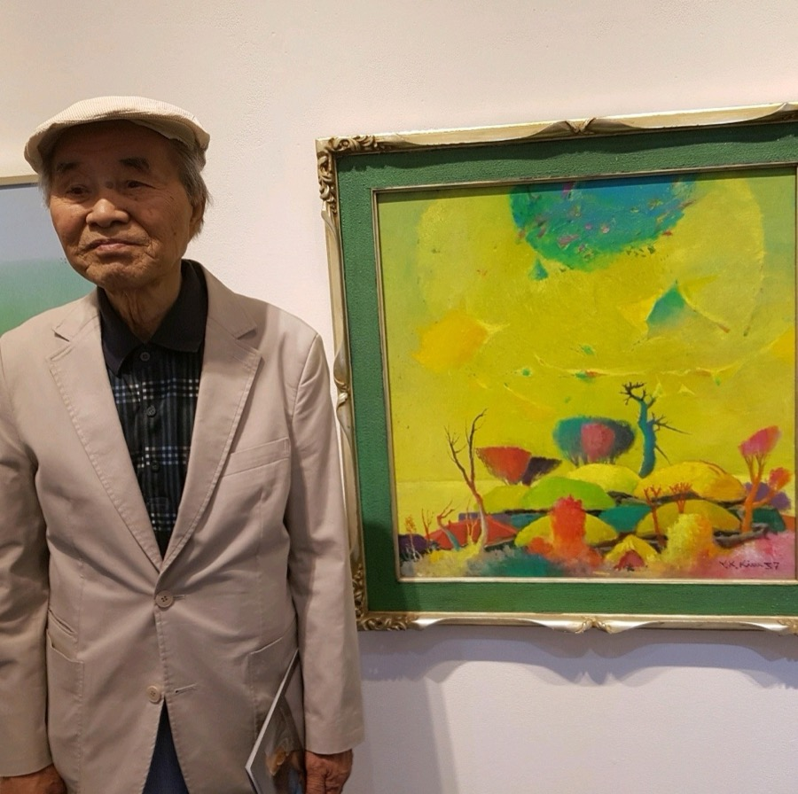
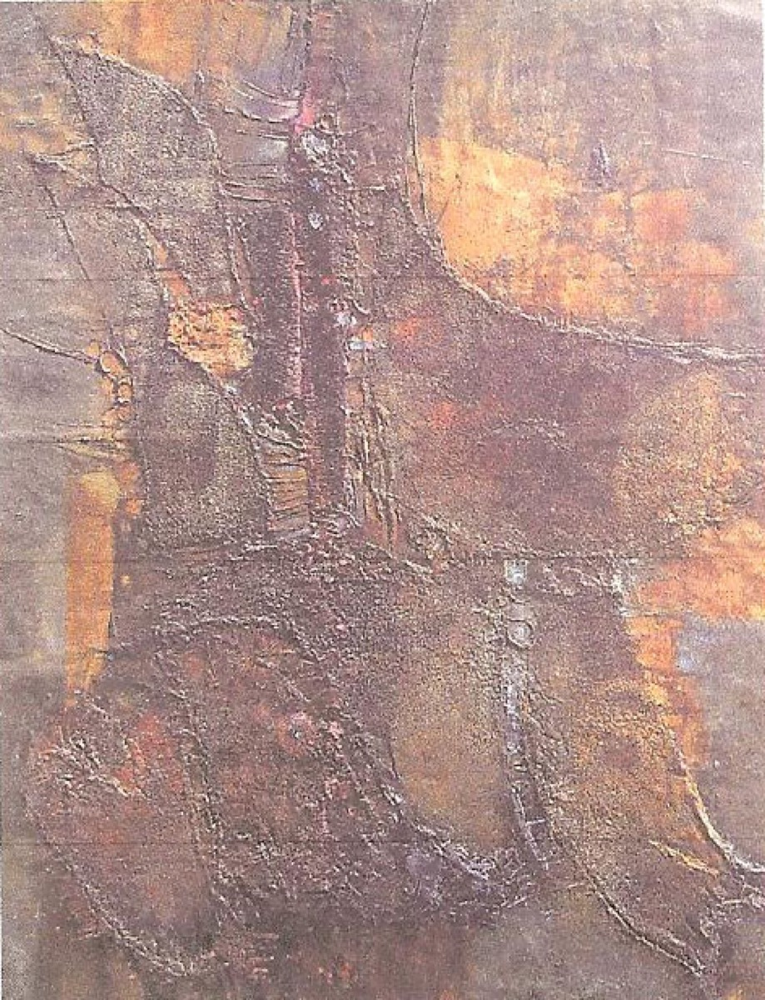
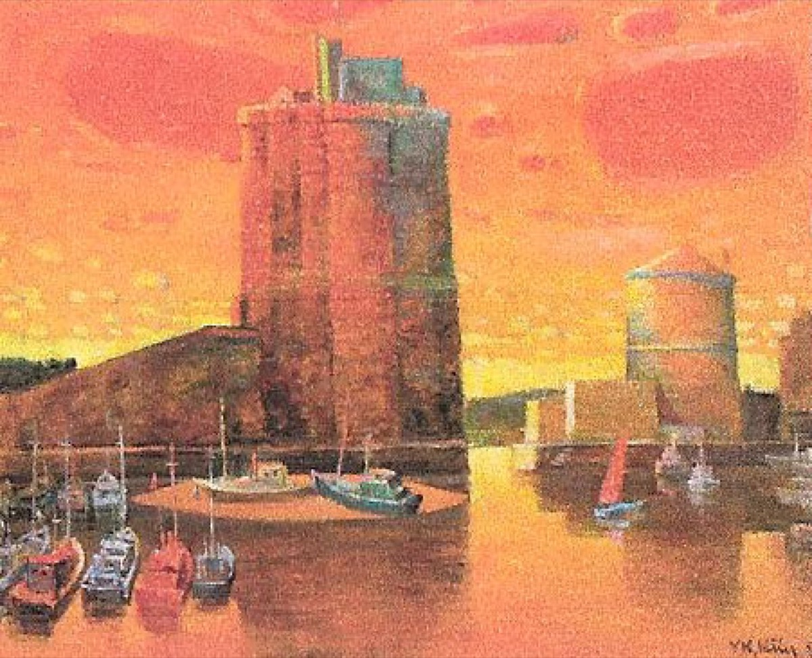
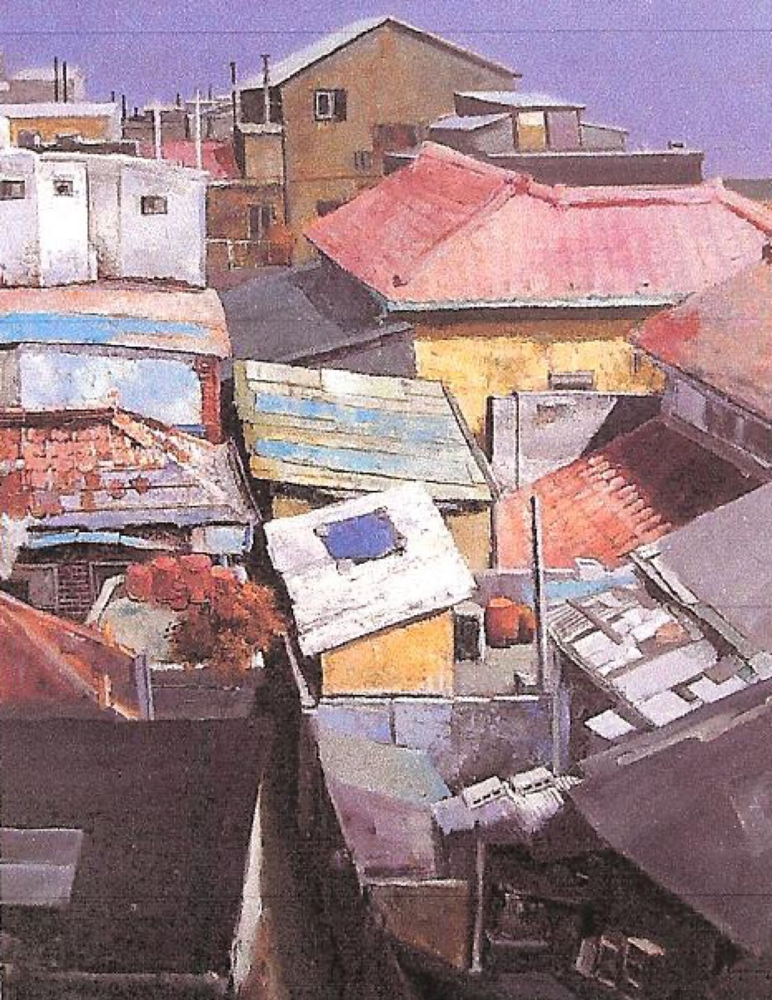
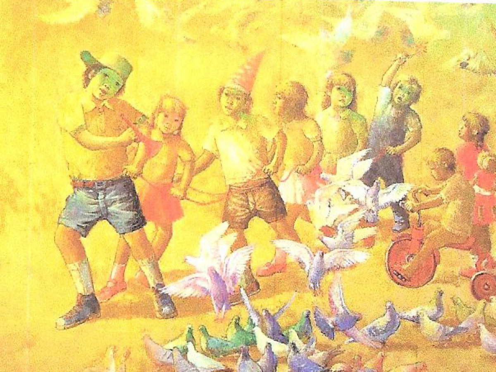
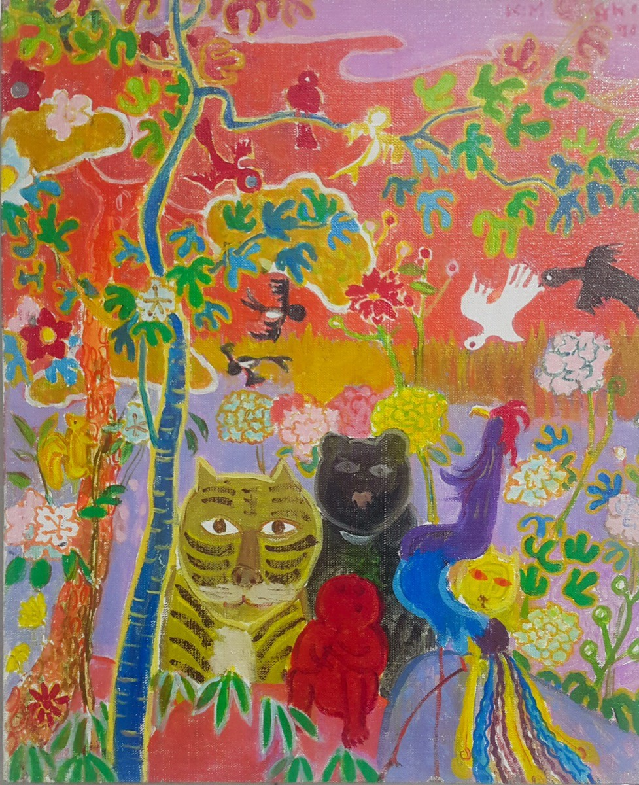

김용기 화백
"그저 좋아서 또 그리고 싶어서 붓을 잡는다 — 내 인생이 어떤 형태로 시작되었든 간에 그 종착역은 화가였을 것이다."

김용기 화백(1926–2020)은 일본 동경에서 태어난 한국의 근대서양화 화가입니다. 당시 주류 화단과 달리 아카데미에 속하지 않고 평생을 독학으로 작품 활동을 이어갔습니다. 1960년대부터 붓을 잡기 시작해 1971년 가족과 함께 프랑스로 건너간 뒤 유럽에서 활동을 넓혀, 코트다쥐르 국제미술대전 대상과 르살롱전 금상을 수상했습니다. 국내에서는 대한민국미술대전 심사위원을 역임하기도 했습니다.
교편을 잡기보다 작품 활동과 가족과의 평화로운 시간을 택한 화가였습니다. '욘보'라는 별명을 지어준 다정한 어머니와 누나, 먼저 세상을 떠난 부인을 그리워하며 숨을 거두는 순간까지 이젤 앞을 지켰습니다. 94세, 평생의 화실이자 거처였던 종로구 숭인동의 오래된 벽돌집에서 사랑하는 가족들에게 둘러싸인 채 눈을 감았습니다.
'욘보'는 김용기 화백의 아명입니다. 동대문과 신설동 사이, 숭인동의 미로 같은 골목을 따라가면 만나는 작은 벽돌집이 바로 욘보스페이스입니다. 화가가 60년간 작품 활동을 하고 가족과 행복한 삶을 보낸 이 공간에는 수백 점의 유작이 남아 있으며, 지금은 가족이 그 예술혼을 기리고 전하기 위해 운영하고 있습니다.
욘보의 그림 세계

프랑스에 거주하며 유럽의 인상주의, 야수주의, 표현주의를 폭넓게 수용했습니다. 한국으로 돌아와서는 고향의 풍경을 그리면서도 자연색에 머무르지 않고 주관적이고 강렬한 색채를 사용해, '한국적인 것은 소박하다'는 기존의 틀을 깬 새로운 향토성을 보여주었습니다.
독학으로 작업해온 만큼 한 가지 스타일을 고집하지 않고 유연한 태도를 가졌습니다. 강렬한 개성을 잃지 않으면서도 그리는 즐거움과 보는 즐거움을 동시에 주는 모든 방식을 받아들였고, 그 자유로운 캔버스 위에는 한국 근대서양화의 다양한 추상과 구상적 요소가 함께 담겨 있습니다.
대표작품



